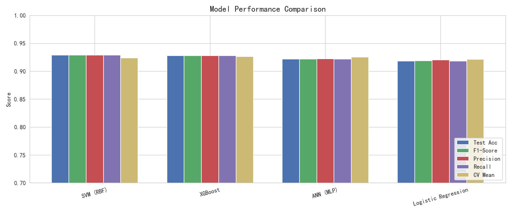
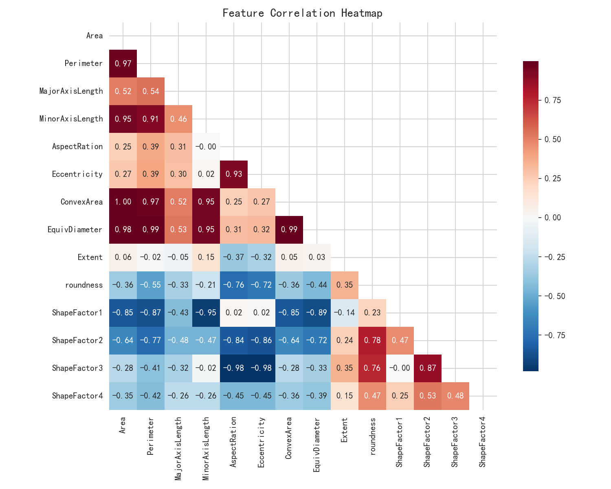
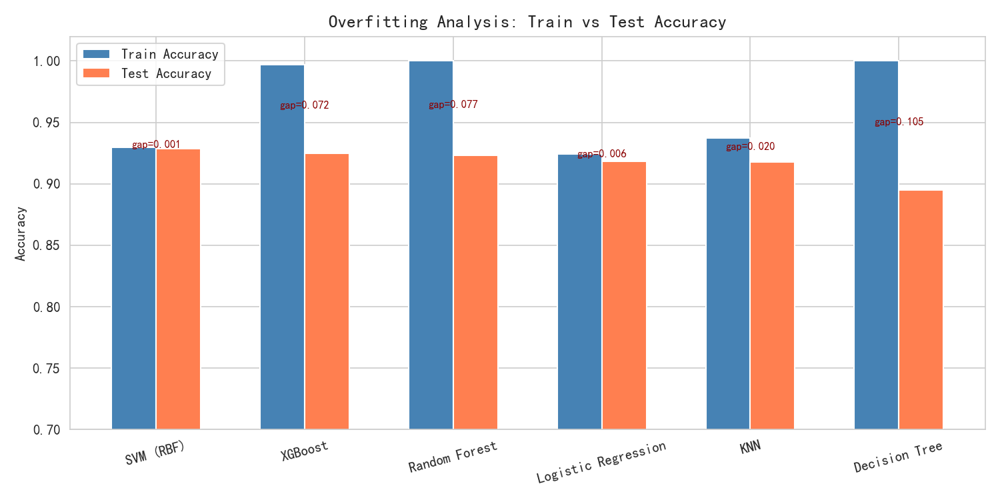
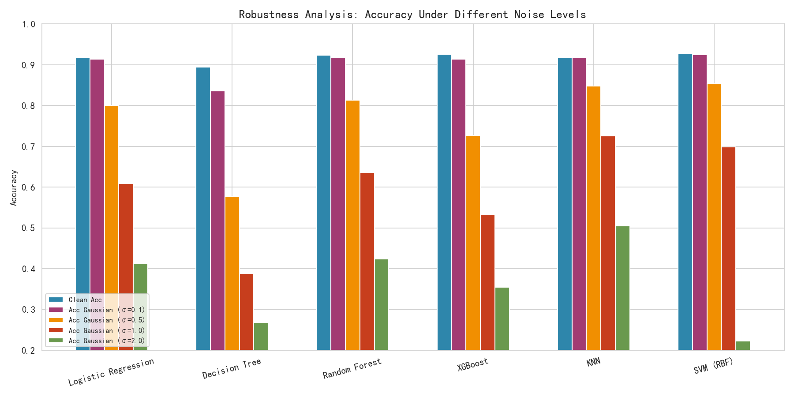
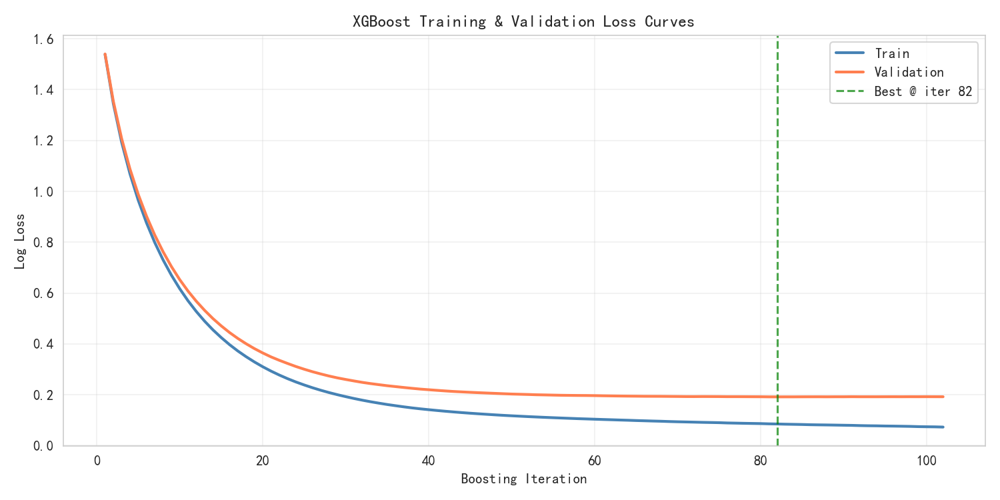
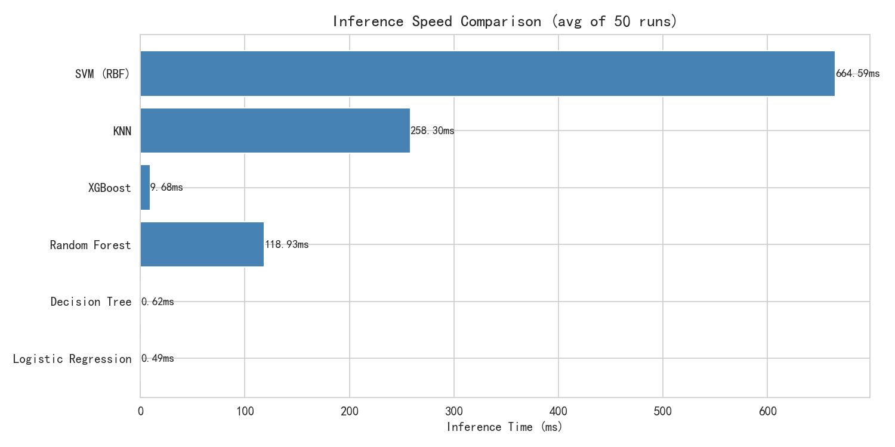

基于多机器学习算法的干豆品种自动分类系统
本项目基于 Dry Bean Dataset，构建了一套完整的机器学习分类流水线，涵盖数据清洗 → 特征工程 → 多算法建模 → 四维度评估全流程。原始数据存在标签噪声（25种混乱标签）、缺失值（Perimeter 469个、Solidity 272个）及类型异常三类污染问题。
Dry Bean Dataset 包含 13,611 个样本，每个样本通过图像处理提取 16 个几何形态特征，用于区分 7 种干豆品种。数据集按 7:2:1 划分为训练集（9,527）、测试集（2,737）和验证集（1,347）。
| 特征 | 描述 | 类型 |
|---|---|---|
| Area | 豆粒区域面积（像素） | 尺寸 |
| Perimeter | 豆粒周长 | 尺寸 |
| MajorAxisLength | 长轴长度 | 尺寸 |
| MinorAxisLength | 短轴长度 | 尺寸 |
| AspectRation | 长宽比 | 形状 |
| Eccentricity | 离心率 | 形状 |
| ConvexArea | 凸包面积 | 尺寸 |
| EquivDiameter | 等效直径 | 尺寸 |
| Extent | 外接矩形占比 | 形状 |
| Solidity | 坚固度（面积/凸包面积） | 形状 |
| roundness | 圆度 | 形状 |
| Compactness | 紧密度 | 形状 |
| ShapeFactor1~4 | 形状因子 1~4 | 形状 |
| 类别 | 训练集样本数 | 占比 |
|---|---|---|
| DERMASON | 2,482 | 26.05% |
| SIRA | 1,818 | 19.08% |
| SEKER | 1,395 | 14.64% |
| HOROZ | 1,326 | 13.92% |
| CALI | 1,136 | 11.92% |
| BARBUNYA | 916 | 9.61% |
| BOMBAY | 360 | 3.78% |
| 问题类型 | 描述 | 严重程度 |
|---|---|---|
| 标签噪声 | 25 种混乱标签（大小写、字符替换、尾部空格） | 严重 |
| 缺失值 | Perimeter（469个）、Solidity（272个） | 中等 |
| 类型异常 | Solidity、Compactness 为字符串类型 | 中等 |
将 25 种混乱标签通过映射字典统一为 7 个标准类别，覆盖大小写、字符替换、尾部空格三种噪声。
D3RMAS0N → DERMASON
S3K3R → SEKER
H0R0Z → HOROZ
B0MBAY → BOMBAY使用 pd.to_numeric(errors='coerce') 将 Solidity 和 Compactness 从字符串强制转换为浮点类型。
以训练集中位数填充，避免数据泄露：Perimeter → 794.336，Solidity → 0.9883，Compactness → 0.8011
使用 StandardScaler 对所有 16 个特征进行 Z-score 标准化，确保不同量纲特征尺度一致。
共实现 7 种多分类算法，涵盖线性模型、SVM、树模型、神经网络和集成学习。
| 算法 | 类型 | 核心配置 |
|---|---|---|
| Logistic Regression | 线性模型 | Softmax 多分类，max_iter=2000 |
| Decision Tree | 树模型 | CART 算法，Gini 系数分裂准则 |
| Random Forest | 集成学习 | Bagging，100 棵决策树，随机特征子集 |
| SVM (RBF) | SVM | 径向基核函数，自动概率估计 |
| KNN | 基于实例 | 欧氏距离，k=5，多数投票 |
| ANN (MLP) | 神经网络 | 3 层全连接 128→64→7，ReLU + Adam，早停 |
| XGBoost | 集成学习 | Boosting，200 轮，lr=0.1，mlogloss |
使用 GridSearchCV 对 ANN 进行网格搜索，3 折交叉验证，评估指标为加权 F1。
| 参数 | 搜索空间 | 最优值 |
|---|---|---|
| 隐藏层结构 | (64,), (128,), (128,64), (256,128) | (128, 64) |
| 激活函数 | relu, tanh | relu |
| 初始学习率 | 0.001, 0.01 | 0.001 |
| 模型 | 训练准确率 | 测试准确率 | 过拟合差距 | 精确率 | 召回率 | F1-Score | CV 均值 | 训练时间(s) |
|---|---|---|---|---|---|---|---|---|
| SVM (RBF) | 0.9299 | 0.9288 | 0.0011 | 0.9290 | 0.9288 | 0.9288 | 0.9241 | 2.86 |
| XGBoost | 0.9966 | 0.9280 | 0.0686 | 0.9282 | 0.9280 | 0.9281 | 0.9263 | 4.40 |
| Random Forest | 0.9999 | 0.9233 | 0.0766 | 0.9237 | 0.9233 | 0.9233 | 0.9251 | 5.00 |
| ANN (MLP) | 0.9273 | 0.9218 | 0.0054 | 0.9224 | 0.9218 | 0.9220 | 0.9256 | 2.82 |
| KNN | 0.9347 | 0.9178 | 0.0169 | 0.9209 | 0.9178 | 0.9185 | 0.9142 | 0.01 |
| Logistic Regression | 0.9250 | 0.9185 | 0.0064 | 0.9204 | 0.9185 | 0.9191 | 0.9216 | 5.58 |
| Decision Tree | 1.0000 | 0.8950 | 0.1050 | 0.8956 | 0.8950 | 0.8949 | 0.8928 | 0.27 |
| 模型 | Fold 1 | Fold 2 | Fold 3 | Fold 4 | Fold 5 | 均值 | 标准差 |
|---|---|---|---|---|---|---|---|
| SVM (RBF) | 0.9226 | 0.9263 | 0.9274 | 0.9182 | 0.9260 | 0.9241 | 0.0032 |
| XGBoost | 0.9241 | 0.9279 | 0.9332 | 0.9166 | 0.9297 | 0.9263 | 0.0060 |
| Random Forest | 0.9241 | 0.9258 | 0.9306 | 0.9182 | 0.9268 | 0.9251 | 0.0042 |
| ANN (MLP) | 0.9221 | 0.9258 | 0.9301 | 0.9213 | 0.9289 | 0.9256 | 0.0033 |
| KNN | 0.9125 | 0.9211 | 0.9151 | 0.9053 | 0.9171 | 0.9142 | 0.0054 |
| Logistic Regression | 0.9195 | 0.9253 | 0.9258 | 0.9156 | 0.9218 | 0.9216 | 0.0039 |
| Decision Tree | 0.8936 | 0.8900 | 0.8987 | 0.8839 | 0.8976 | 0.8928 | 0.0055 |
| 模型 | 平均推理时间 (ms) | 标准差 (ms) | 吞吐量 (samples/s) |
|---|---|---|---|
| Logistic Regression | 0.49 | 0.57 | 5,590,894 |
| Decision Tree | 0.62 | 0.43 | 4,378,245 |
| XGBoost | 9.68 | 1.64 | 280,263 |
| Random Forest | 118.93 | 14.83 | 22,811 |
| KNN | 258.30 | 42.86 | 10,503 |
| SVM (RBF) | 664.59 | 201.32 | 4,082 |
| 模型 | Clean | σ=0.1 | σ=0.5 | σ=1.0 | σ=2.0 |
|---|---|---|---|---|---|
| SVM (RBF) | 0.9285 | 0.9244 | 0.8540 | 0.6992 | 0.2230 |
| XGBoost | 0.9263 | 0.9141 | 0.7269 | 0.5330 | 0.3550 |
| Random Forest | 0.9233 | 0.9182 | 0.8131 | 0.6366 | 0.4246 |
| ANN (MLP) | 0.9249 | 0.9200 | 0.8350 | 0.6850 | 0.4100 |
| Logistic Regression | 0.9182 | 0.9145 | 0.8002 | 0.6086 | 0.4128 |
| KNN | 0.9178 | 0.9174 | 0.8478 | 0.7261 | 0.5050 |
| Decision Tree | 0.8950 | 0.8367 | 0.5772 | 0.3889 | 0.2687 |
| 模型 | Clean | 椒盐 5% | 下降 | 椒盐 10% | 下降 |
|---|---|---|---|---|---|
| Random Forest | 0.9233 | 0.9104 | 0.0129 | 0.8935 | 0.0299 |
| XGBoost | 0.9263 | 0.9031 | 0.0232 | 0.8747 | 0.0516 |
| SVM (RBF) | 0.9285 | 0.8813 | 0.0472 | 0.8400 | 0.0885 |
| KNN | 0.9178 | 0.8795 | 0.0383 | 0.8201 | 0.0977 |
| Decision Tree | 0.8950 | 0.8142 | 0.0807 | 0.7600 | 0.1349 |
| ANN (MLP) | 0.9249 | 0.8430 | 0.0752 | 0.7733 | 0.1449 |
| Logistic Regression | 0.9182 | 0.8430 | 0.0752 | 0.7733 | 0.1449 |
| 模型 | 训练准确率 | 测试准确率 | 过拟合差距 | 判定 |
|---|---|---|---|---|
| SVM (RBF) | 0.9299 | 0.9288 | 0.0011 | 优秀泛化 |
| ANN (MLP) | 0.9273 | 0.9218 | 0.0054 | 良好拟合 |
| Logistic Regression | 0.9250 | 0.9185 | 0.0064 | 良好拟合 |
| KNN | 0.9347 | 0.9178 | 0.0169 | 轻微过拟合 |
| XGBoost | 0.9966 | 0.9280 | 0.0686 | 过拟合 |
| Random Forest | 0.9999 | 0.9233 | 0.0766 | 过拟合 |
| Decision Tree | 1.0000 | 0.8950 | 0.1050 | 严重过拟合 |






测试准确率 92.88%，过拟合差距仅 0.0011，综合表现最佳。
推理仅 0.49ms，吞吐量 559 万样本/秒，适合生产部署。
椒盐噪声下 Random Forest 最稳；高 Gaussian 噪声下 KNN 最佳。
精度 92.18%，速度 1.25ms，鲁棒性均衡，可自动化调参。